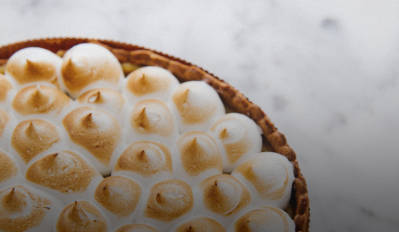

Recestas Dulces>
Recetas Saladas
Contacto

El clásico Lemon Pie
Es el preferido de los que les gusta lo dulce pero no lo empalagoso. El lemon pie es más bien una tarta, es decir, una base de masa y un relleno. Como su nombre lo indica está hecha con limón, más bien con el jugo del limón, azúcar y huevos. Todo eso mezclado hace el famoso custard, el relleno cremoso a
Ingredientes
Para la masa
- 200g. de harina 0000
- 1 cucharada de ralladura de limón
- 4 yemas
- 100g. de manteca
Para la crema
- 150cc. de jugo de limón
- 1 cucharada de ralladura de limón
- 4 yemas
Para el merengue
- 240g. de azúcar
- 3 claras
Instrucciones
Procesar o mezclar ligeramente la harina, el azúcar y la manteca fría cortada en cubitos, hasta formar un arenado. Agregar el huevo y unir la masa sin trabajarla mucho. Envolver en film y llevar a la heladera por 30 minutos aproximadamente
Precalentar el horno a temperatura media (180 °C)
Estirar sobre una mesada enharinada y tapizar un molde para tarta desmontable de 22 cm de diámetro. Cocinar durante 20 minutos o hasta que comience a dorarse
Mezclar la Leche Condensada Nestlé con 4 yemas, 150cc de jugo de limón y la ralladura. Unir bien y verter sobre la masa precocida. Cocinar en horno moderado durante 15 minutos
Mezclar la Leche Condensada Nestlé con 4 yemas, 150cc de jugo de limón y la ralladura. Unir bien y verter sobre la masa precocida. Cocinar en horno moderado durante 15 minutos
Colocar el azúcar en una cacerolita y cubrir con apenas con agua. Cocinar hasta obtener un merengue italiano
Unos minutos antes del punto del almíbar, comenzar a batir las claras. Cuando empiecen a formar picos, añadir gota a gota el almíbar caliente sin dejar de batir hasta que se enfríe
Decorar con el merengue y gratinar